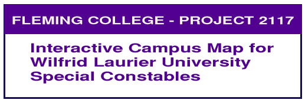
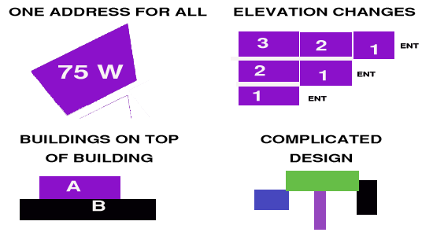

Efficient navigation at Wilfrid Laurier University (Waterloo Campus) (WLU) has proven to be and remains a challenging task
in need of rectification. The location of the campus, primarily situated
within one city block provides an environment where many buildings are tightly
compacted in a small area. Many of these are built above, below, and in front
of each other, and many buildings are interconnected. This creates navigation
issues when trying to quickly navigate to a precise location, which is especially
critical when addressing emergency response calls.
Our client, the WLU Constable Service has contacted our team seeking assistance
in helping improve location awareness. The WLU Special Constables’ primarily
role is to provide campus policing services and to assist outside first responders
(Waterloo Police, Fire, and Paramedic services) when they are needed on campus.

At present, all outside first responders who are responding to an incident
on campus are routed to the main campus entrance at 75 University Avenue West.
WLU Special Constables meet and accompany these personnel directly
to the incident location. Although recognized as an inefficient use of staff, it is
necessary due to the complexity of the campus.

Contact Info:
Email:
Cell:
Sonya Shuster -Applications
Project Team Lead and Programming Analyst
Sonya provides programming leadership and spatial analysis skills.
Sonya will work with the team on creating the database
and performing spatial analysis required to create the solution for this project.
Contact Info:
Email:
Cell:
Kendrick Lok - Applications
Research and Development Coordinator and Associate Programming Analyst
Kendrick is an applications specialist with a passion for
software exploration and development. Kendrick will also play a key role
in creating the ArcGIS Pro products, and web application model.
Contact Info:
Email:
Cell:
James Albert- Cartographic
James is a cartographic specialist which comes equipped with many years in print and web graphic development.
With over 25 years and web and print development James has extensive knowledge
in graphic and web applications. James will be responsible for overall web presentation
and graphical design components including custom mapping elements